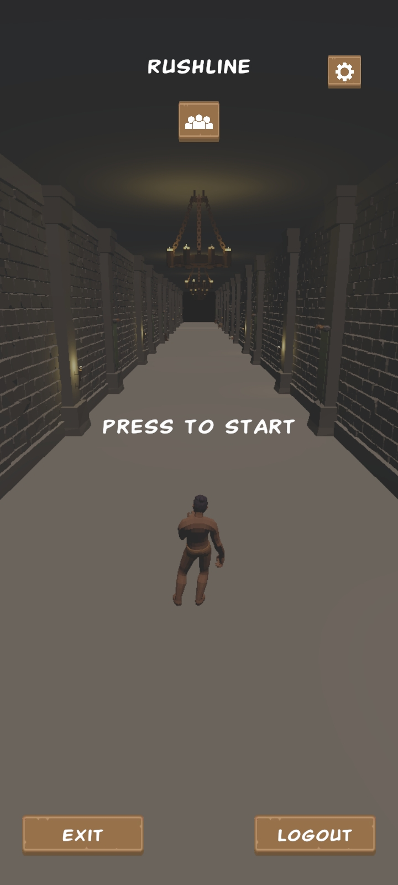
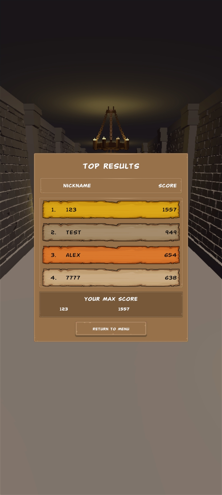
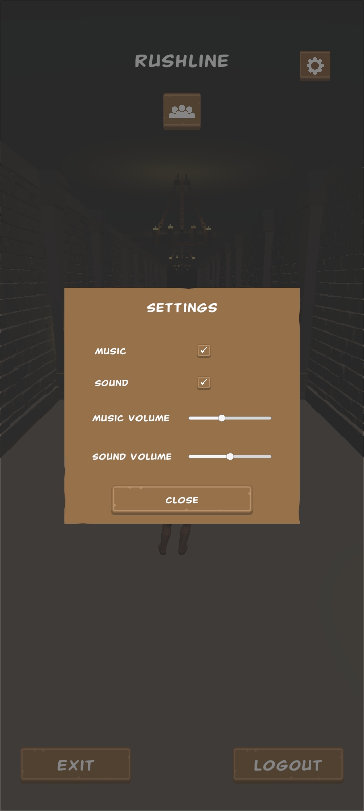
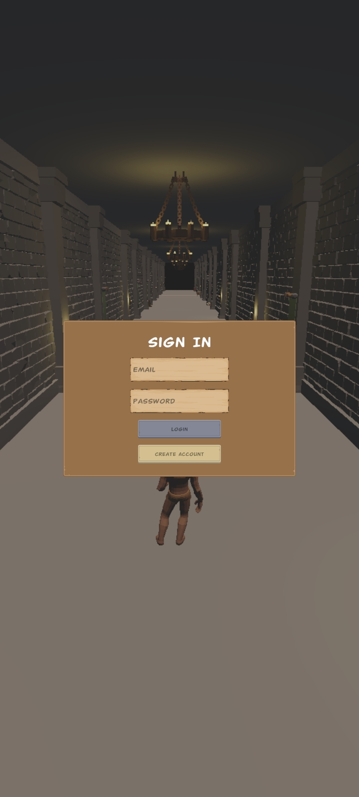
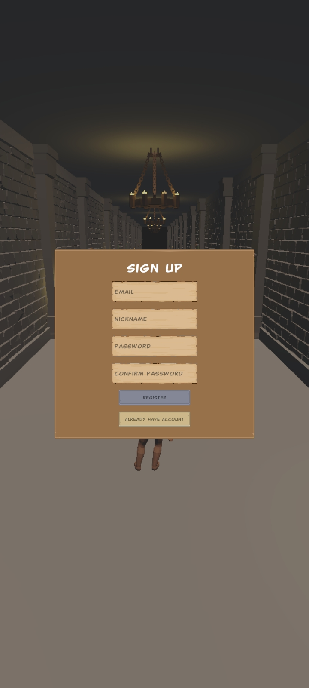
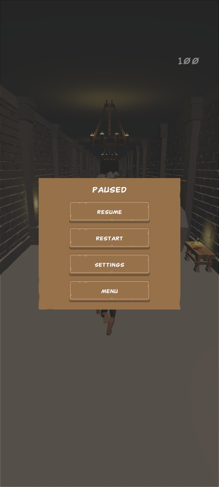
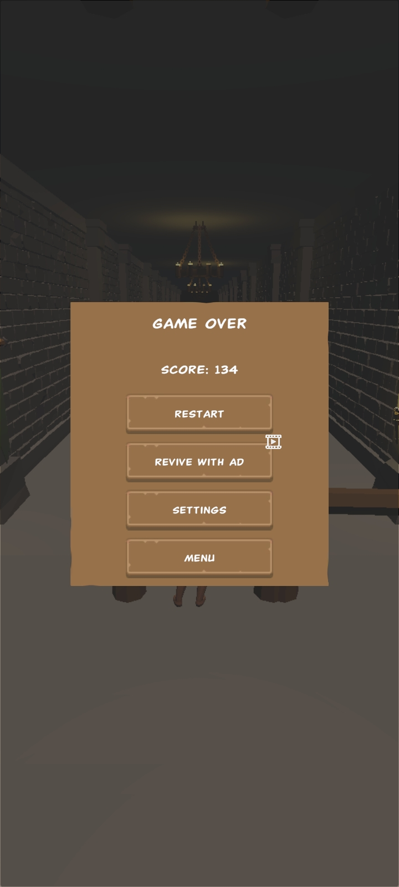

Overview
Rushline is a mobile-focused 3D endless runner where the player survives by switching lanes, jumping, sliding and reacting to dynamically generated obstacle patterns.
The project was developed as a more production-oriented Unity project with modular architecture, dependency injection, configurable gameplay data and separated services for gameplay, UI, ads, authentication, leaderboard, audio and save flow.
The goal was to build a complete Android-ready runner with scalable systems, Firebase authentication, leaderboard functionality, AdMob rewarded ads and a clean structure that goes beyond a simple gameplay prototype.
What I Implemented
- Complete 3D endless runner gameplay loop
- Player controller with lane switching, jump and slide mechanics
- Player state machine for idle, run, jump, slide and death states
- Mobile swipe input and editor keyboard input strategies
- Procedural road generation with segment cleanup / recycling
- Dynamic obstacle pattern spawning and difficulty scaling
- Score, best result, defeat, restart and continue flow
- Rewarded ads revive / continue system using AdMob
- Firebase login, registration and logout flow
- Leaderboard submission and top players display flow
- UI windows, popups, HUD, settings and defeat screens
- Save data for sound, music and player preferences
Technical Case Study
Technical decisions
- Used a player state machine for idle, run, jump, slide and death states
- Built procedural road generation with segment cleanup / recycling for endless runner flow
- Integrated Firebase authentication, leaderboard flow and AdMob rewarded revive as production-style features
What problems I solved
- Kept lane switching, jump and slide behavior responsive across mobile swipe input and editor testing
- Handled obstacle patterns, difficulty scaling and score flow without breaking gameplay readability
- Connected login, leaderboard, rewarded ads, restart and continue flow into one Android-ready project
Result
- Most production-like project in the portfolio with gameplay, UI, backend and monetization systems
- Demonstrates architecture thinking, mobile feature integration and complete game flow ownership
- Shows readiness to work on real Unity mobile tasks inside a team project
Project Links
Gameplay Media







